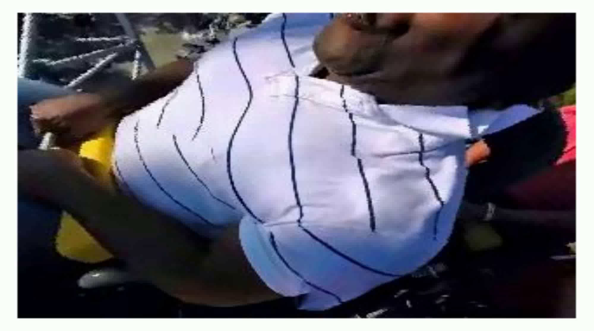
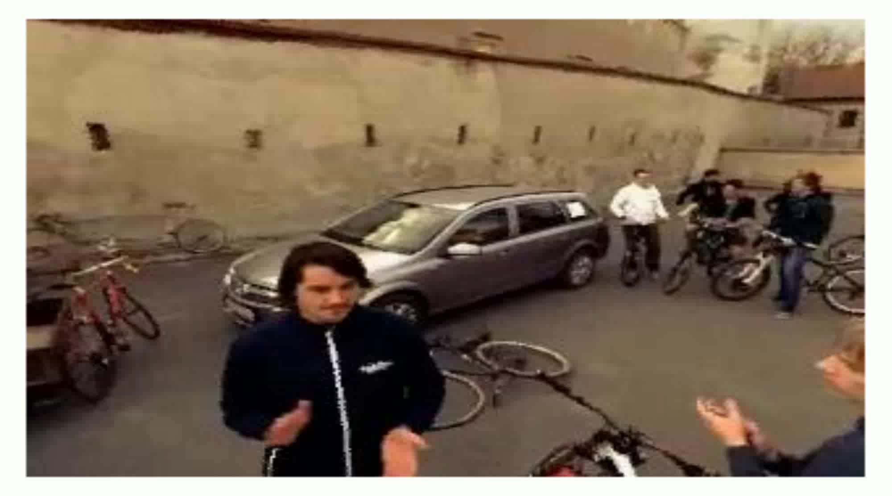
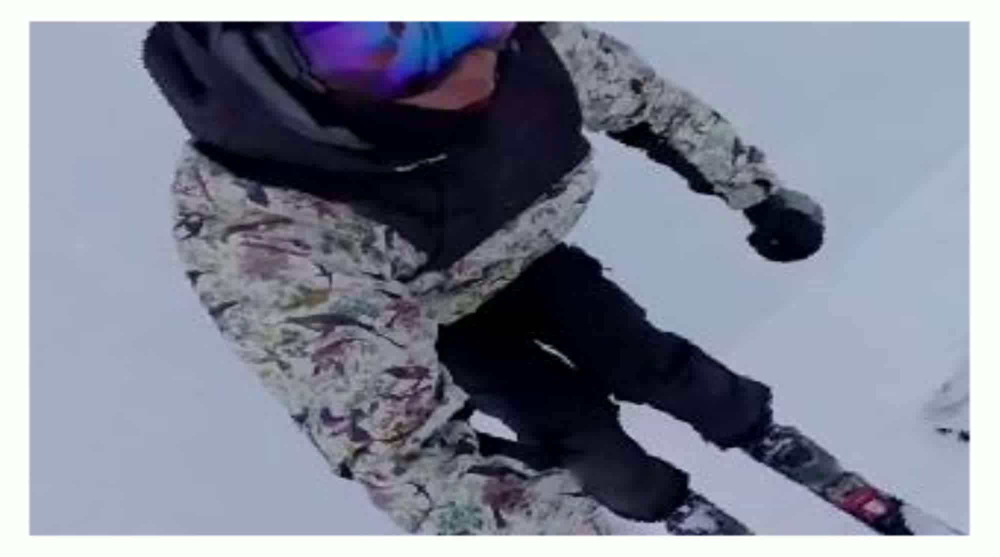
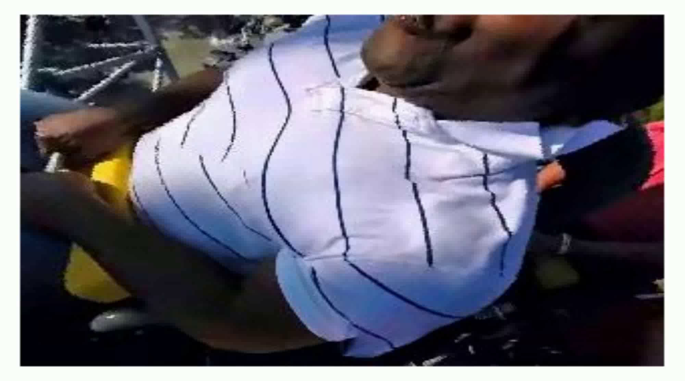
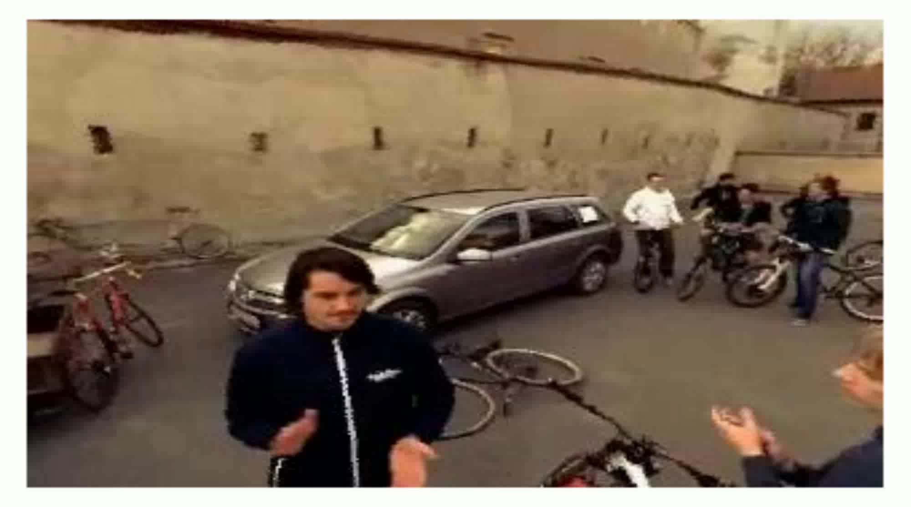
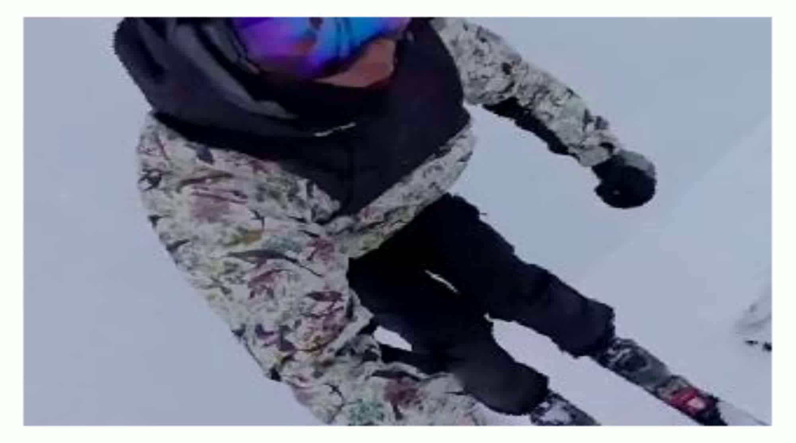
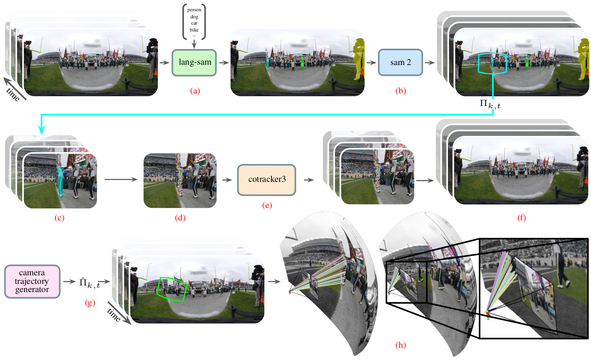

TAPVid360-10k Dataset
Examples

 





Perspective Video (What the Model Sees)
Equirectangular With Tracking Points For Visualisation (Full 360 View)
Creation Methodology
We have curated a dataset (TAPVid360-10k). The pipeline begins by employing Lang-SAM on
the initial frame of a pre-filtered 360° video, utilising specific text prompts (e.g., 'person',
'car') to segment dynamic objects of interest. These segmentation masks are then temporally
propagated across the full video sequence via SAM 2. We subsequently extract dynamic 2D perspective
viewports centred on each object mask, within which CoTracker3 is applied to generate robust
point tracks. These 2D tracks are then inversely projected back onto the 360° spherical domain.
Finally, we simulate novel camera trajectories to generate new 2D perspective sequences, using the
associated ground truth 3D directional rays as training data for our model.
